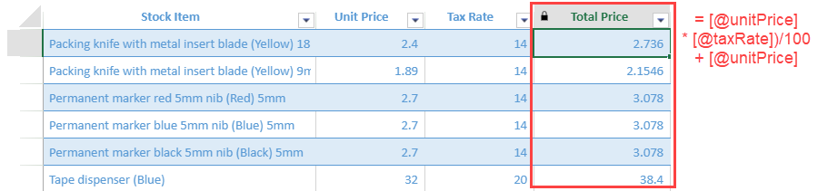
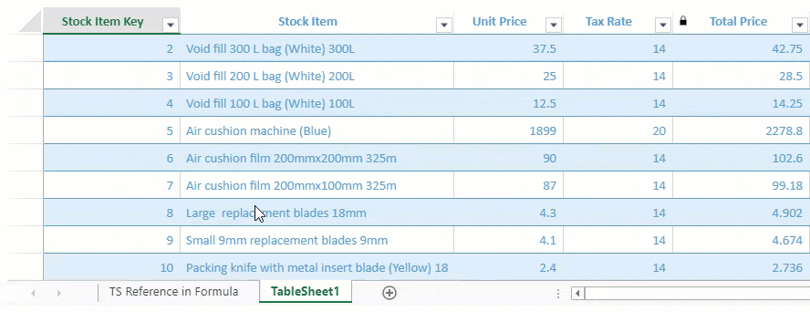

TableSheet uses an enhanced calculation engine to help users to create and analyze data in the current view as well as a normal spreadsheet.
You can add calculated columns by using simple column references or advanced summary and logical functions. These calculated columns can be created using structured references like "=[@column1]" and they also support CalcEngine functions.

The reference consists of at least one row or column reference. You can find all the available row and column references in the following table.
| Reference | Description and Example |
|---|---|
| Row References | |
| Current Row |
Reference the current row. [@column1] - The data in the current row of field column1. |
|
Relative Row |
Reference the relative row. [@+1column1] - Returns column1 value in the next row. [@-1column1] - Returns column1 value in the previous row. |
|
Absolute Row |
Reference the row of absolute position by row number or "last"/"odd"/"even". [#1[column1]] - Returns column1 values in first row. |
|
Absolute Row by ID |
Reference the row by the primary key. [$1234[column1]] - Returns column1 values of data with primary key "1234" |
|
Row Range |
Reference the range of rows by from and to. [@:#last[column1]] - Returns column1 values of rows from current row to the last row |
|
Several Rows |
Reference several rows by comma. [#1,@-1:@+1,#last[column1]] - Returns column1 values in first row, previous row to the next row, and the last row. |
| Column References | |
|
Regular Field |
Reference the current field. [@column1] - The data in the current field column1. |
|
Attribute of object field |
Reference the attribute of the current field. [@column1.abc] - Returns the attribute value of "abc" in the current row of field column1. |
|
Item of array field |
Reference the index item of the current field. [@column1.1] - Returns the first value in the current row of field column1. |
|
Special Field |
Reference the attribute of the current field with spaces. [@[column 1].[a aa]] - Returns a certain field using the square brackets. |
|
Whole Column |
Reference the whole field. [column1] - Returns all the data in the column1. |
The following code sample shows how to create a calculated column where the "Total Price" column is defined by the formula "=([@unitPrice] * [@taxRate])/100 + [@unitPrice]".
| JavaScript |
Copy Code
|
|---|---|
//bind a view to the table sheet myTable.fetch().then(function () { var view = myTable.addView("myView", [ { value: "stockItem", width: 300, caption: "Stock Item" }, { value: "unitPrice", width: 120, caption: "Unit Price" }, { value: "taxRate", width: 120, caption: "Tax Rate" }, { value: "=([@unitPrice] * [@taxRate])/100 + [@unitPrice]", caption: "Total Price", width: 150 } // calculated column ]); sheet.setDataView(view); }); |
|
You can use structured references to reference the tablesheet in a worksheet just like a table. This helps to cross-reference and summarize data in the tablesheet to create advanced report views.
Like a table reference, you can set the tablesheet name and the column caption in a formula. It also supports the A1/R1C1 reference style, although it is not as easy to read.
For example, the following GIF illustrates the use of functions such as SUM, COUNT, and UNIQUE where the tablesheet reference is “SUM(Tablesheet1[Total Price])" and so on.

The reference style can also be used in cell formulas, charts, and conditional formats.
The following code sample shows how to set a tablesheet reference in a worksheet.
| JavaScript |
Copy Code
|
|---|---|
// Create a new sheet and add it at 2nd position. var sheet1 = new GC.Spread.Sheets.Worksheet(); sheet1.name("TS Reference in Formula"); spread.addSheet(1, sheet1); sheet1.setColumnWidth(0, 250); sheet1.setColumnWidth(1, 150); // TS Reference in WorkSheet Formulas sheet1.setValue(0, 0, "Stock Items Count") sheet1.setFormula(0, 1, "=COUNTA(TableSheet1[Stock Item Key])"); sheet1.setValue(1, 0, 'Sum of Total Price') sheet1.setFormula(1, 1, '=SUM(TableSheet1[Total Price])'); // unique tax rates sheet1.setValue(3, 0, 'Different Tax Rates are:-') sheet1.setFormula(3, 1, '=UNIQUE(TableSheet1[Tax Rate])'); // it returns a dynamic array and we have already set allowDynamicArray to true initially |
|
You can use the QUERY function to fetch data from Data Manager tables. To know more, refer to QUERY function in Formula Reference.